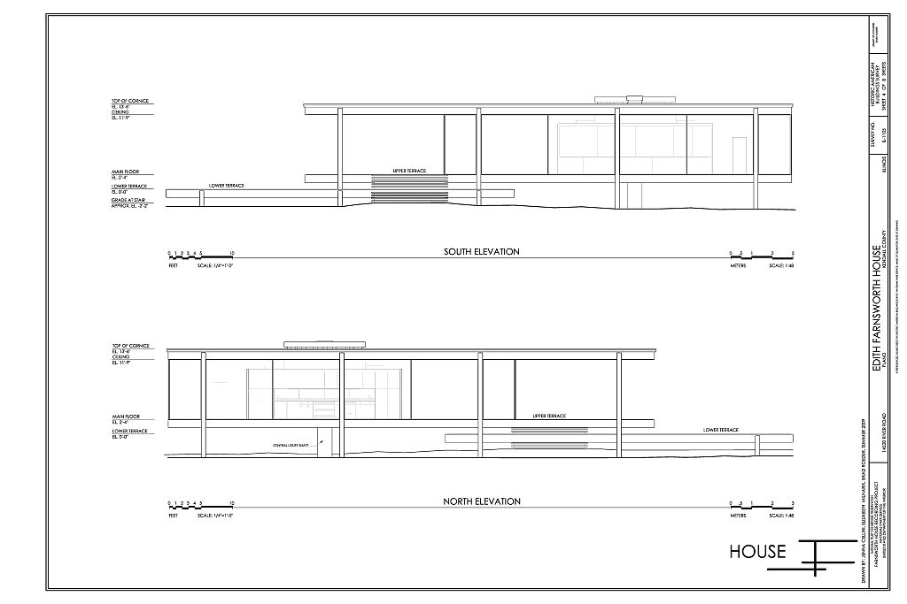
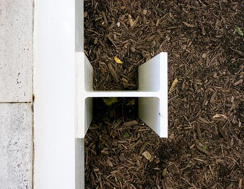
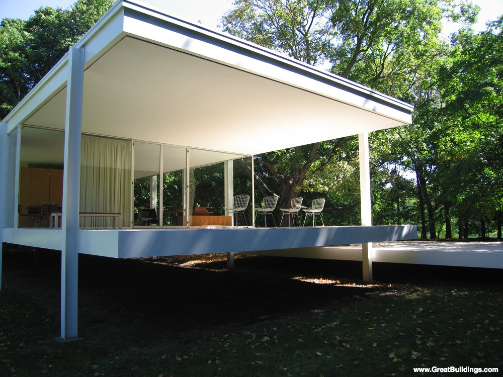
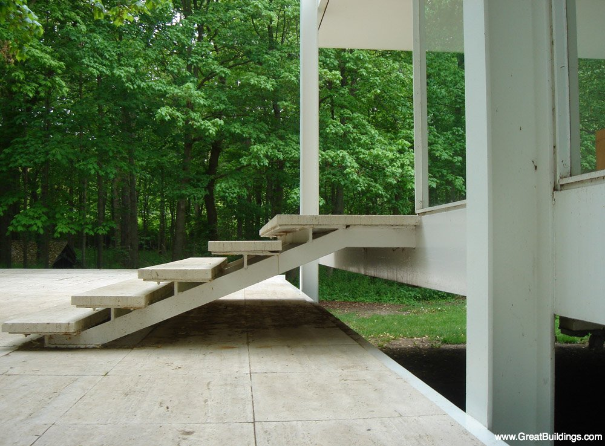
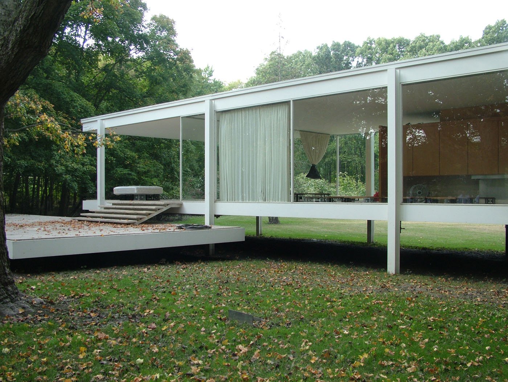
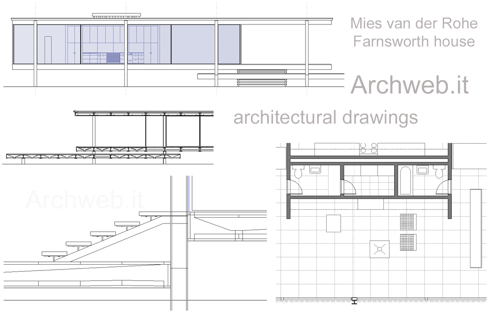
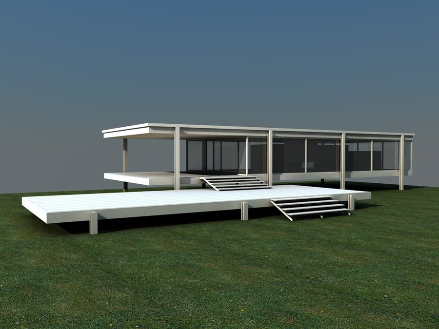
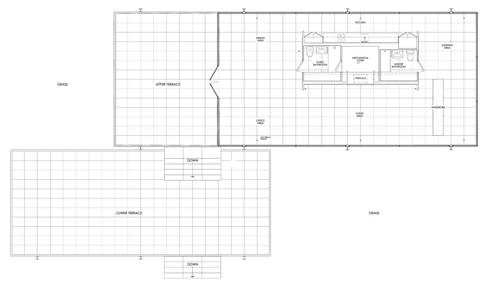

Nome della costruzione: Farnsworth House
Nome: Stefano Russo
Matricola: 436425
Link web:
http://en.wikipedia.org/wiki/Farnsworth_House
http://en.wikiarquitectura.com/index.php/Farnsworth_House
http://www.archdaily.com/59719/ad-classics-the-farnsworth-house-mies-van-der-rohe/
http://www.greatbuildings.com/buildings/Farnsworth_House.html
Esercizi:
Exercise 1
Exercise 2
Exercise 3
Exercise 4
Immagini:
